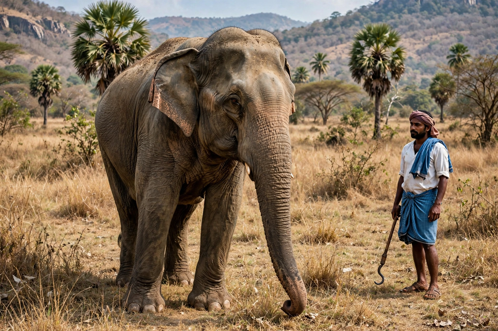

Asian elephant
| Scientific classification | |
|---|---|
 | |
| Kingdom | Animalia |
| Order | Proboscidea |
| Family | Elephantidae |
| Genus | Elephas |
| Species | E. maximus |
| Conservation status | Endangered (IUCN) |
The Asian elephant (Elephas maximus), also known as the Asiatic elephant, is the only living species of the genus Elephas and is distributed throughout the Indian subcontinent and Southeast Asia, from India and Nepal in the west to Borneo in the south. It is the largest living land animal in Asia and has been listed as Endangered on the IUCN Red List since 1986, the wild population having declined by at least 50% over the last three generations.
Description
Asian elephants are smaller than African bush elephants, reaching a shoulder height of about 2.7–3 metres and a mass of up to some 5 tonnes. They are distinguished by smaller, rounded ears that do not cover the shoulder, a convex or level back, a single finger-like projection on the trunk tip, and depigmented patches of skin. Only males grow tusks, and many males — called makhnas in India — are tuskless. Recognised subspecies include the Indian, Sri Lankan, and Sumatran elephants, with the Borneo pygmy elephant of debated status.
Behaviour
Elephants live in matriarchal family groups led by the oldest female, communicating through rumbles, trumpets, and low-frequency infrasound, as well as seismic signals detected through the feet. They are highly intelligent, showing self-recognition, empathy and elaborate mourning behaviour. An elephant may eat for 16 hours a day, consuming well over 100 kg of vegetation.
Humans and conservation
Asian elephants have been tamed for at least four thousand years, serving in warfare for commanders from Porus to Hannibal's contemporaries, in logging, ceremony, and religious life — the elephant-headed god Ganesha and the white elephants of Thai and Burmese kings being famous examples. Today the chief threats are habitat loss and fragmentation, poaching for ivory and skin, and conflict with farmers. Wild numbers are estimated at only around 40,000–50,000, with a similar large number in captivity across Asia.
See also
This article is a recreation written from memory for the muse-webcrawl project.